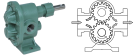
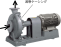
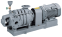
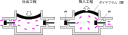

2024年
問題74 空気調和設備のポンプに関する次の記述のうち，最も不適当なものはどれか．
（1）ダイヤフラムポンプは，薬液注入などに用いられることが多い．
（2）ターボ型ポンプは，連続的に送水でき脈動が少ないことが特徴である．
（3）渦巻きポンプは，油輸送などの粘度の高い液体の輸送用途に用いられることが多い．
（4）ポンプの急停止による水撃作用を防止するには，緩閉式逆止め弁を用いる方法がある．
（5）流体のある部分の圧力が低下し，局部的な蒸発により気泡が発生する現象をキャビテーションという．
問題74 正解（3） 頻出度AAA
油輸送などの粘度の高い液体の輸送には，容積型のポンプである歯車ポンプが広く用いられている（2024-74-1表，2024-74-1 図参照）．
2024-74-1表 ポンプの種類
| ターボ型 | 遠心ポンプ | 渦巻きポンプ，ディフューザポンプ |
| 斜流ポンプ | ||
| 軸流ポンプ | ||
| 容積型 | 往復ポンプ | ピストンポンプ，プランジャポンプ，ダイヤフラムポンプ |
| 回転ポンプ | 歯車ポンプ，ねじポンプ，べーンポンプ | |
| 特殊型 | 渦流ポンプ，気泡ポンプ，水撃ポンプ，ジェットポンプ，電磁ポンプ，粘性ポンプ | |
歯車ポンプ（ギヤポンプ）は，2個の歯車がケーシングの中で回転し，流体を押し出す容積式ポンプで，圧力にかかわらず流量がほぼ一定に保たれる．歯車ポンプは油類の移送に広く用いられている．

出典 株式会社亀嶋鐵工所
https://nk-pump.co.jp/product/ka-1/
次のモノタロウの説明「ギアポンプの特長」が，使い方がよくわかる．
ターボ型に属する渦巻きポンプ（2024-74-2図）は，羽根車と渦巻き状のケーシング(渦室)で水に遠心力を与え，速度エネルギーを圧力エネルギーに変換する．

出典 川本ポンプ
https://www.kawamoto.co.jp/products/index02.php?id=7 を基に作成
渦巻きポンプには片吸込み型と両吸込み型があり，水量が多い場合は，両吸込み型が用いられる．
高揚程を得るために2枚以上の羽根車(インペラ)を直列に組み込み，吸込口から吐出口まで，順次昇圧していくポンプを多段渦巻きポンプという（2024-74-3図）．

出典 川本ポンプ
https://www.kawamoto.co.jp/products/index02.php?id=27
-(1) ダイヤフラム式のポンプ（2024-74-4図参照）は接液部に摺動部分（軸シール）がなく，シールの摩耗による外部への液漏れがないので，薬液、溶剤の搬送を安全に行える．また，メンテナンスも容易である．

出典 株式会社MonotaRO（MonotaRO Co.,Ltd.）
https://corp.monotaro.com/overview.html
-(2) 羽根車の回転によって流体に連続的にエネルギーを与えるターボ型機械の特徴は流体に脈動が少ないことである．逆に流体の脈動が特徴的なのは-(1) のダイヤフラム式などの容積型往復ポンプである．
-(4) 水撃作用（ウォーターハンマ）の防止には，その発生原因により次のような対策を取る．
1．エアチャンバ，ショックアブソーバ，その他のウォーターハンマ防止器をできるだけ発生箇所の近くに取り付ける．
2．ポンプが急停止しないようにポンプにフライホイールなどを付加して慣性重量を大きくする．
3．ポンプの吐出し側の逆止弁を急開式や自閉式として逆流を阻止する．
4．緩閉式逆止弁を用い逆流の圧力変動を緩和する．
-(5) キャビテーション（cavitation：空洞現象とも言われる．）は液流体に特有の現象で，ベルヌーイの定理により流体の高速流れによってインペラ(羽根車)表面の静圧が低下し，部分的に流体の飽和蒸気圧力以下になることで液中の微小な気泡やごみを核として液が沸騰し，液の蒸気で満たされた気泡が発生する．この気泡が急激に押しつぶされるときに激しい騒音と振動が発生し，吐出量も低下する．繰り返しの衝撃波によってついにはインペラの金属面に損傷が発生する．
水面よりポンプが高い位置にある場合，理論的には水面から約10m(＝大気圧)まで吸上げ可能であるが，必要NPSHや吸込み配管の抵抗等があって実際には5～6mまでである．水が温水になると，キャビテーションを起こしやすくなるためさらに低くなり，60℃を超えると吸上げ不可能となる．
ポンプの吸込み口において液体が有する圧力(大気圧－ポンプ吸込み口と液面の高さの差)から液温に相当する蒸気圧を差し引いた圧力を液柱で表したものがNPSH(有効吸込みヘッド)である．ポンプが内部でキャビテーションを起こさないために必要な圧力の余裕を必要NPSHという．必要NPSHはポンプの性能の1つで，この値が小さいほど吸込み能力が高い．キャビテーションを防ぐためにはNPSH＞必要NPSHでなければならない（2024-74-5図参照）．
NPSHは次式で求めることができる．
上式中の\(\displaystyle \frac{P_A}{\rho {\rm g}}-\frac{P_V}{\rho {\rm g}}\)は，(大気による押上水頭圧)－(水の飽和水蒸気水頭圧)で，≒10mであるから，
例えば，\(S\)＝3m，\(H_L\)＝2.3mの時，NPSH＝10－3－2.3＝4.7m．したがって，ポンプの必要NPSH＜4.7mでなければならない．
特性曲線図（2024-74-6図）から，キャビテーションはポンプの送水量が大きい範囲で起きやすいことが分かる．吐出しバルブを絞ることによってキャビテーションの発生を防止できることが多い．
出典 公益財団法人 日本建築衛生管理教育センター
新建築物の環境衛生管理H31.3.31第1版第1刷 中224 図5-2-1(47)を基に作成